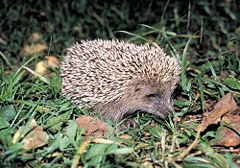

Jeż (Erinaceus) – rodzaj ssaków z podrodziny jeży (Erinaceinae) w obrębie rodziny jeżowatych (Erinaceidae).
Długość ciała (bez ogona) 158–306 mm, długość ogona 17–42 mm, długość ucha 16–30 mm, długość tylnej stopy 34–54 mm; masa ciała 526–1400 g.
Rodzaj zdefiniował w 1758 roku szwedzki przyrodnik Karol Linneusz w książce swojego autorstwa o tytule Systema Naturae. Na gatunek typowy Linnaeus wyznaczył (oznaczenie monotypowe) jeża zachodniego (E. europaeus).
| Imię jeża | Wypłata | Stopień zadowolenia |
|---|---|---|
| Bob | 110 zł | 7/10 |